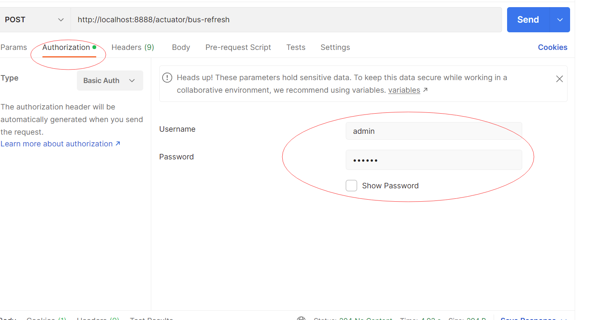

Spring Cloud Config
示意图

git
示例： config-repo 各位同学要创建自己的repo。
创建步骤简要描述：
- 创建仓库
- 创建文件夹
- 在文件夹中创建 user-dev.yml文件
- 回到仓库首页，点击管理
- 在管理页面下方找到开源选项并选中
- 提交后即可访问
Config服务端配置
新建项目
填加依赖
<dependency>
<groupId>org.springframework.cloud</groupId>
<artifactId>spring-cloud-starter-netflix-eureka-client</artifactId>
</dependency>
<dependency>
<groupId>org.springframework.cloud</groupId>
<artifactId>spring-cloud-config-server</artifactId>
</dependency>
入口类加注解
@EnableConfigServer
配置文件添加
spring:
cloud:
config:
server:
git: #配置存储信息的Git仓库
#username: xxx
#password: 123456
uri: https://gitee.com/nixf/config-repo.git # 仓库地址
clone-on-start: true # 启动时直接从gitee获取数据
search-paths: unit_5 # 搜索目录
default-label: master # 默认的分支
label: master #分支信息
测试
测试config服务器配置是否生效，以如下所示格式访问
http://localhost:8888/application_name/profile/branch_name
application_name: 指应用的注册名 profile： 环境（dev,test,product) branch_name: git分支名
以我们创建git仓库时建的文件user-dev.yml为例，对它的内容访问路径为：
http:localhost:8888/user/dev/master
可以在user-dev.yml中添加内容后再查看效果。
客户端配置
添加依赖
<!--此jar包会读取bootstrap.yml，给应用使用config服务的机会 -->
<dependency>
<groupId>org.springframework.cloud</groupId>
<artifactId>spring-cloud-starter-bootstrap</artifactId>
<version>3.1.1</version>
</dependency>
<dependency>
<groupId>org.springframework.cloud</groupId>
<artifactId>spring-cloud-config-client</artifactId>
</dependency>
新建bootstrap.yml
server:
port: 9092 #修改为你安排的端口
spring:
application:
name: message # 修改为你应用的注册名
cloud:
config:
profile: dev # 指定开发环境，还可以是test product等。
label: master # git分支
uri: http://localhost:8888 #config 服务地址
name: user #当前应用名，用于匹配git内的配置文件
演示对git中配置文件定义的属性的访问。
//（6-1）
@RestController
@RefreshScope
public class ConfigController {
//读取配置中的值，此值只在git内有
@Value("${my-name}")
private String myName;
@GetMapping("/my-name")
public String getConfigName() {
return myName;
}
}
刷新
刷新需要使用actuator的refresh端口。 http://localhost:8888/actuator/refresh
添加actuator依赖
<dependency>
<groupId>org.springframework.boot</groupId>
<artifactId>spring-boot-starter-actuator</artifactId>
</dependency>
同时打开refresh端口
management:
endpoints:
web:
exposure:
include: 'refresh'
也可以打开全部端口：
management:
endpoints:
web:
exposure:
include: '*'
@RefreshScope
注意上面例子（6-1）的@RefreshScope注解，它对于使用自定义变量在通过接口通知后自动刷新本地变量至关重要。
config 高可用
配置config高可用后，就不能再指定一个url路径了，需要使用eureka的帮助自动匹配服务地址。
cloud:
config:
profile: dev
lable: master
# uri: http://localhost:8888
name: user
discovery: # 启用自动寻址
enabled: true # 打开为TRUE
service-id: config # config的服务ID--即eureka的注册名
Spring Cloud Bus
Spring Cloud Bus需要使用RabbitMQ帮助。 参见 Rabbit安装
RabbitMQ的相关概念
- Broker 消息队列服务
- Connection publisher 和 consumer 与broker的tcp连接
- Channel 逻辑连接
- Exchange 分发消息 p2p topic multicast/fanout
- Queue 真正的消息队列
- Binding exchange和queue之间的虚拟连接
MQ通用概念：
graph LR Publisher --发送消息--> Broker Broker --推消息--> Receiver Receiver --拉消息--> Broker
Config服务和Config客户端接入Spring Cloud Bus后，我们可以只通知Config服务更新配置，即可实现所有的客户端都自动更新配置的目的。 步骤如下：
config server配置
服务端需要接入rammbitMQ,所以增加以下依赖：
<dependency>
<groupId>org.springframework.cloud</groupId>
<artifactId>spring-cloud-starter-bus-amqp</artifactId>
</dependency>
<dependency>
<groupId>org.springframework.boot</groupId>
<artifactId>spring-boot-starter-actuator</artifactId>
</dependency>
同时，配置文件中添加rabbitMQ的配置。同时打开bus-refresh端口，通过此端口通知Config服务刷新配置。
spring:
rabbitmq:
host: localhost
port: 5672
username: guest
password: guest
management:
endpoints:
web:
exposure:
include: 'bus-refresh' # config服务端开发端口，通过post访问
config client配置
Config 客户端也需要接入RabbitMQ。添加依赖：
<dependency>
<groupId>org.springframework.cloud</groupId>
<artifactId>spring-cloud-starter-bus-amqp</artifactId>
</dependency>
添加配置文件：
spring:
rabbitmq:
host: localhost
port: 5672
username: guest
password: guest
测试
更改git的配置后，使用Post方法调用 http://localhost:8888/actuator/bus-refresh 即可更新所有通过bus链接到config服务的配置。
Config服务器安全
引进安全jar包：
<dependency>
<groupId>org.springframework.boot</groupId>
<artifactId>spring-boot-starter-security</artifactId>
</dependency>
设置服务的用户名和密码：
spring:
application:
name: config
security:
user:
name: admin
password: 123456
放开刷新接口的访问：
@Configuration
public class SecurityConfig extends WebSecurityConfigurerAdapter {
protected void configure(HttpSecurity http) throws Exception {
http.authorizeRequests().anyRequest()
.authenticated()
.and().httpBasic().and().csrf().disable();
}
}
客户端添加安全配置：
cloud:
config: # house-dev.yml
profile: dev # 指定开发环境，还可以是test product等。
label: master # git分支
# uri: http://localhost:8888 #config 服务地址
name: house #当前应用名，用于匹配git内的配置文件
discovery: # 启用自动寻址
enabled: true # 打开为TRUE
service-id: config # config的服务ID--即eureka的注册名
username: admin
password: 123456
使用Postman刷新： 